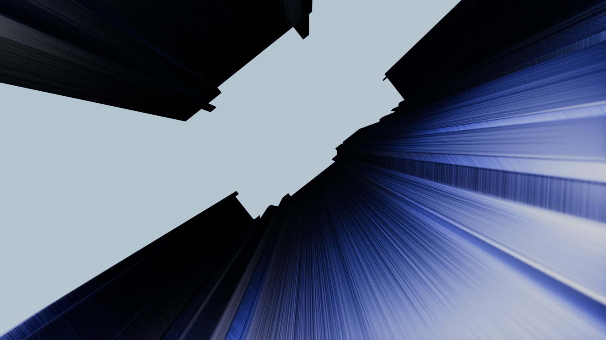
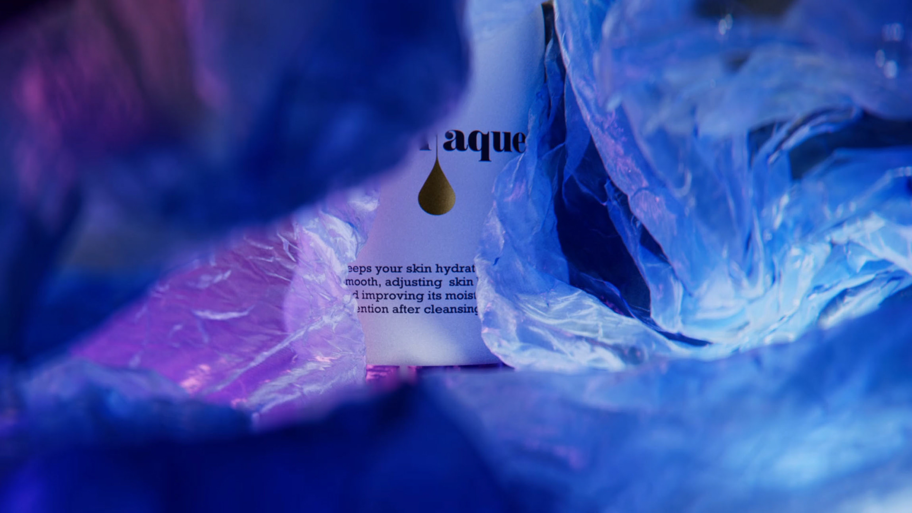

↑
Spectral
Optical geometry pushed to its edge — a full CGI eyewear campaign built on form, light refraction, and the idea that glass can feel alive.

3D artist & visual director. I make things look better than real.
Optical geometry pushed to its edge — a full CGI eyewear campaign built on form, light refraction, and the idea that glass can feel alive.
A precision render for the Big Bang — where the complexity of a mechanical movement meets the language of high-end CGI product photography.

Two campaigns rooted in material confidence — the kinetic tension of a sole mid-flight and the luminous stillness of a beauty hero shot.


Architectural visualization as atmosphere — a residential project rendered at the intersection of raw concrete, soft light, and landscape silence.

Beauty rendered with intent — a Pro-V hero image built on motion and shine, paired with a skincare study in fluid geometry and translucency.


Personal explorations into surface, weight, and texture — fabric under tension, stone rendered with geological patience, glass as a liquid interrupted mid-pour.


Work that resists category — carbon woven into wave forms, fabric dissolving into air. These pieces exist only to push the renderer further.